Load the ISLR package and check the the Hitters data.
library(ISLR)
data(Hitters)?Hittersstr(Hitters)## 'data.frame': 322 obs. of 20 variables:
## $ AtBat : int 293 315 479 496 321 594 185 298 323 401 ...
## $ Hits : int 66 81 130 141 87 169 37 73 81 92 ...
## $ HmRun : int 1 7 18 20 10 4 1 0 6 17 ...
## $ Runs : int 30 24 66 65 39 74 23 24 26 49 ...
## $ RBI : int 29 38 72 78 42 51 8 24 32 66 ...
## $ Walks : int 14 39 76 37 30 35 21 7 8 65 ...
## $ Years : int 1 14 3 11 2 11 2 3 2 13 ...
## $ CAtBat : int 293 3449 1624 5628 396 4408 214 509 341 5206 ...
## $ CHits : int 66 835 457 1575 101 1133 42 108 86 1332 ...
## $ CHmRun : int 1 69 63 225 12 19 1 0 6 253 ...
## $ CRuns : int 30 321 224 828 48 501 30 41 32 784 ...
## $ CRBI : int 29 414 266 838 46 336 9 37 34 890 ...
## $ CWalks : int 14 375 263 354 33 194 24 12 8 866 ...
## $ League : Factor w/ 2 levels "A","N": 1 2 1 2 2 1 2 1 2 1 ...
## $ Division : Factor w/ 2 levels "E","W": 1 2 2 1 1 2 1 2 2 1 ...
## $ PutOuts : int 446 632 880 200 805 282 76 121 143 0 ...
## $ Assists : int 33 43 82 11 40 421 127 283 290 0 ...
## $ Errors : int 20 10 14 3 4 25 7 9 19 0 ...
## $ Salary : num NA 475 480 500 91.5 750 70 100 75 1100 ...
## $ NewLeague: Factor w/ 2 levels "A","N": 1 2 1 2 2 1 1 1 2 1 ...Are there any missing values?
NA_index <- is.na(Hitters)
length(Hitters[NA_index])## [1] 59There are 59 missing values here, so before we proceed we will remove them:
Hitters <- na.omit(Hitters)
NA_index <- is.na(Hitters)
length(Hitters[NA_index])## [1] 0We will now use the package leaps to evaluate all the best-subset models. It considers all possible variable combinations for each possible model size. The * in each row of the model output below signifies the chosen variable.
library(leaps)
subset_full <- regsubsets(Salary ~ ., data = Hitters)
summary(subset_full)## Subset selection object
## Call: regsubsets.formula(Salary ~ ., data = Hitters)
## 19 Variables (and intercept)
## Forced in Forced out
## AtBat FALSE FALSE
## Hits FALSE FALSE
## HmRun FALSE FALSE
## Runs FALSE FALSE
## RBI FALSE FALSE
## Walks FALSE FALSE
## Years FALSE FALSE
## CAtBat FALSE FALSE
## CHits FALSE FALSE
## CHmRun FALSE FALSE
## CRuns FALSE FALSE
## CRBI FALSE FALSE
## CWalks FALSE FALSE
## LeagueN FALSE FALSE
## DivisionW FALSE FALSE
## PutOuts FALSE FALSE
## Assists FALSE FALSE
## Errors FALSE FALSE
## NewLeagueN FALSE FALSE
## 1 subsets of each size up to 8
## Selection Algorithm: exhaustive
## AtBat Hits HmRun Runs RBI Walks Years CAtBat CHits CHmRun CRuns
## 1 ( 1 ) " " " " " " " " " " " " " " " " " " " " " "
## 2 ( 1 ) " " "*" " " " " " " " " " " " " " " " " " "
## 3 ( 1 ) " " "*" " " " " " " " " " " " " " " " " " "
## 4 ( 1 ) " " "*" " " " " " " " " " " " " " " " " " "
## 5 ( 1 ) "*" "*" " " " " " " " " " " " " " " " " " "
## 6 ( 1 ) "*" "*" " " " " " " "*" " " " " " " " " " "
## 7 ( 1 ) " " "*" " " " " " " "*" " " "*" "*" "*" " "
## 8 ( 1 ) "*" "*" " " " " " " "*" " " " " " " "*" "*"
## CRBI CWalks LeagueN DivisionW PutOuts Assists Errors NewLeagueN
## 1 ( 1 ) "*" " " " " " " " " " " " " " "
## 2 ( 1 ) "*" " " " " " " " " " " " " " "
## 3 ( 1 ) "*" " " " " " " "*" " " " " " "
## 4 ( 1 ) "*" " " " " "*" "*" " " " " " "
## 5 ( 1 ) "*" " " " " "*" "*" " " " " " "
## 6 ( 1 ) "*" " " " " "*" "*" " " " " " "
## 7 ( 1 ) " " " " " " "*" "*" " " " " " "
## 8 ( 1 ) " " "*" " " "*" "*" " " " " " "Notice above, the default best-subsets up to size 8. Lets increase that to 19, which is all the variables, create summary statistics on the model and view their names. Calling names on the full_summary gives us the output categories it contains.
subset_full <- regsubsets(Salary ~ ., data = Hitters, nvmax = 19)
full_summary <- summary(subset_full)
names(full_summary)## [1] "which" "rsq" "rss" "adjr2" "cp" "bic" "outmat" "obj"So lets plot the Cp, or the estimated prediction error, for each variable. As we are looking for the Min, we can use the which.min function and color it red.
plot(full_summary$cp, xlab = "Number of Variables", ylab = "Cp")
points(which.min(full_summary$cp), full_summary$cp[which.min(full_summary$cp)],
pch = 20, col = "red")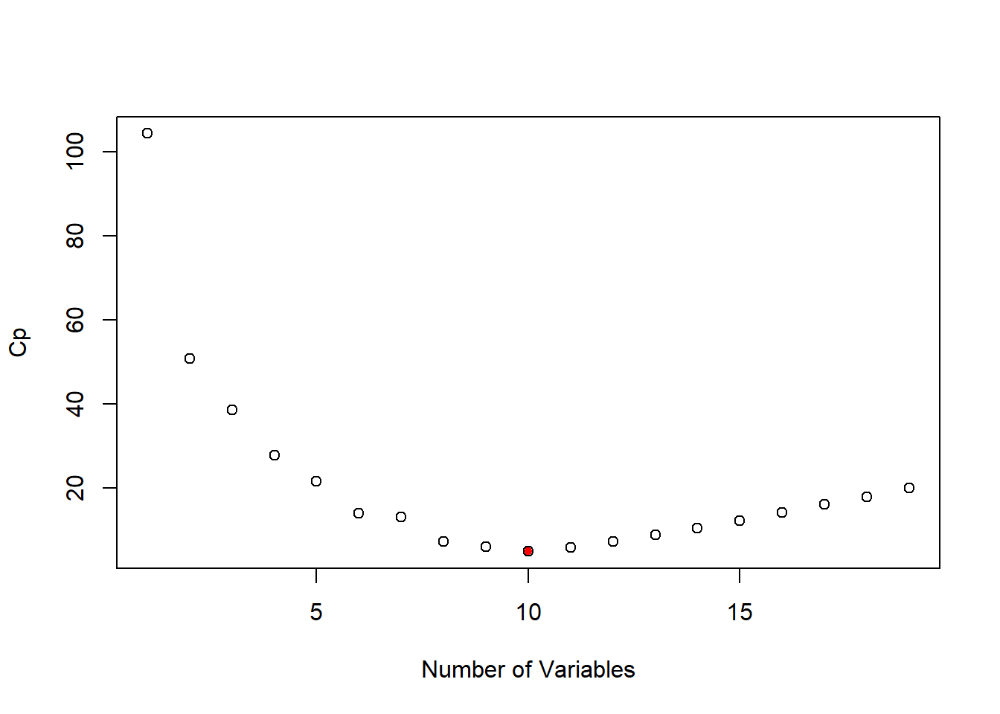
There is a plot method designed specifically for the regsubsets object which is displayed below. It also plots the Cp statistic but each variable. Areas that are colored black indicate the variable is present in the model at the corresponding Cp level, while white areas communicate an absence of the variable.
plot(subset_full, scale = "Cp")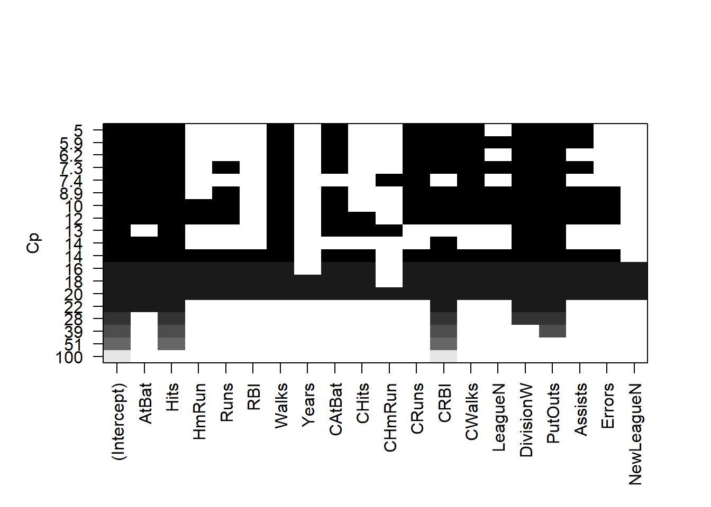
coef(subset_full, 10)## (Intercept) AtBat Hits Walks CAtBat
## 162.5354420 -2.1686501 6.9180175 5.7732246 -0.1300798
## CRuns CRBI CWalks DivisionW PutOuts
## 1.4082490 0.7743122 -0.8308264 -112.3800575 0.2973726
## Assists
## 0.2831680Here we use the regsubsets function but specify the method="forward" option:
forward_step <- regsubsets(Salary ~ ., data=Hitters, nvmax=19, method="forward")
summary(forward_step)## Subset selection object
## Call: regsubsets.formula(Salary ~ ., data = Hitters, nvmax = 19, method = "forward")
## 19 Variables (and intercept)
## Forced in Forced out
## AtBat FALSE FALSE
## Hits FALSE FALSE
## HmRun FALSE FALSE
## Runs FALSE FALSE
## RBI FALSE FALSE
## Walks FALSE FALSE
## Years FALSE FALSE
## CAtBat FALSE FALSE
## CHits FALSE FALSE
## CHmRun FALSE FALSE
## CRuns FALSE FALSE
## CRBI FALSE FALSE
## CWalks FALSE FALSE
## LeagueN FALSE FALSE
## DivisionW FALSE FALSE
## PutOuts FALSE FALSE
## Assists FALSE FALSE
## Errors FALSE FALSE
## NewLeagueN FALSE FALSE
## 1 subsets of each size up to 19
## Selection Algorithm: forward
## AtBat Hits HmRun Runs RBI Walks Years CAtBat CHits CHmRun CRuns
## 1 ( 1 ) " " " " " " " " " " " " " " " " " " " " " "
## 2 ( 1 ) " " "*" " " " " " " " " " " " " " " " " " "
## 3 ( 1 ) " " "*" " " " " " " " " " " " " " " " " " "
## 4 ( 1 ) " " "*" " " " " " " " " " " " " " " " " " "
## 5 ( 1 ) "*" "*" " " " " " " " " " " " " " " " " " "
## 6 ( 1 ) "*" "*" " " " " " " "*" " " " " " " " " " "
## 7 ( 1 ) "*" "*" " " " " " " "*" " " " " " " " " " "
## 8 ( 1 ) "*" "*" " " " " " " "*" " " " " " " " " "*"
## 9 ( 1 ) "*" "*" " " " " " " "*" " " "*" " " " " "*"
## 10 ( 1 ) "*" "*" " " " " " " "*" " " "*" " " " " "*"
## 11 ( 1 ) "*" "*" " " " " " " "*" " " "*" " " " " "*"
## 12 ( 1 ) "*" "*" " " "*" " " "*" " " "*" " " " " "*"
## 13 ( 1 ) "*" "*" " " "*" " " "*" " " "*" " " " " "*"
## 14 ( 1 ) "*" "*" "*" "*" " " "*" " " "*" " " " " "*"
## 15 ( 1 ) "*" "*" "*" "*" " " "*" " " "*" "*" " " "*"
## 16 ( 1 ) "*" "*" "*" "*" "*" "*" " " "*" "*" " " "*"
## 17 ( 1 ) "*" "*" "*" "*" "*" "*" " " "*" "*" " " "*"
## 18 ( 1 ) "*" "*" "*" "*" "*" "*" "*" "*" "*" " " "*"
## 19 ( 1 ) "*" "*" "*" "*" "*" "*" "*" "*" "*" "*" "*"
## CRBI CWalks LeagueN DivisionW PutOuts Assists Errors NewLeagueN
## 1 ( 1 ) "*" " " " " " " " " " " " " " "
## 2 ( 1 ) "*" " " " " " " " " " " " " " "
## 3 ( 1 ) "*" " " " " " " "*" " " " " " "
## 4 ( 1 ) "*" " " " " "*" "*" " " " " " "
## 5 ( 1 ) "*" " " " " "*" "*" " " " " " "
## 6 ( 1 ) "*" " " " " "*" "*" " " " " " "
## 7 ( 1 ) "*" "*" " " "*" "*" " " " " " "
## 8 ( 1 ) "*" "*" " " "*" "*" " " " " " "
## 9 ( 1 ) "*" "*" " " "*" "*" " " " " " "
## 10 ( 1 ) "*" "*" " " "*" "*" "*" " " " "
## 11 ( 1 ) "*" "*" "*" "*" "*" "*" " " " "
## 12 ( 1 ) "*" "*" "*" "*" "*" "*" " " " "
## 13 ( 1 ) "*" "*" "*" "*" "*" "*" "*" " "
## 14 ( 1 ) "*" "*" "*" "*" "*" "*" "*" " "
## 15 ( 1 ) "*" "*" "*" "*" "*" "*" "*" " "
## 16 ( 1 ) "*" "*" "*" "*" "*" "*" "*" " "
## 17 ( 1 ) "*" "*" "*" "*" "*" "*" "*" "*"
## 18 ( 1 ) "*" "*" "*" "*" "*" "*" "*" "*"
## 19 ( 1 ) "*" "*" "*" "*" "*" "*" "*" "*"plot(forward_step, scale = "Cp")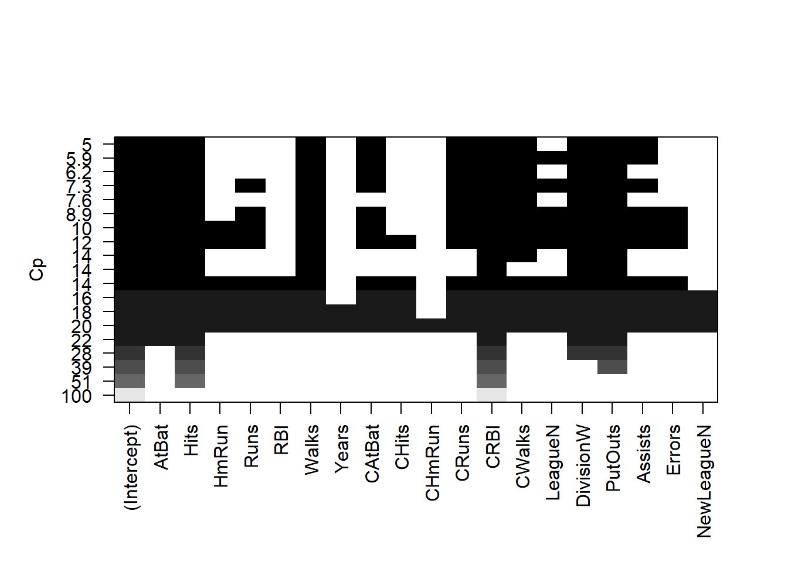
Lets make a training and validation set, so that we can choose a good subset model. We will do it using a slightly different approach from what was done in the the book.
dim(Hitters)## [1] 263 20set.seed(1)
train <- sample(seq(263), 180, replace = FALSE)
forward_step <- regsubsets(Salary ~ ., data = Hitters[train, ], nvmax = 19,
method = "forward")Now we will make predictions on the observations not used for training. We know there are 19 models, so we set up some vectors to record the errors. We have to do a bit of work here, because there is no predict method for regsubsets.
val.errors <- rep(NA, 19)
x.test <- model.matrix(Salary ~ ., data = Hitters[-train, ])
for (i in 1:19) {
coefi <- coef(forward_step, id = i)
pred <- x.test[, names(coefi)] %*% coefi
val.errors[i] <- mean((Hitters$Salary[-train] - pred)^2)
}
plot(sqrt(val.errors), ylab = "Root MSE", ylim = c(300, 400), pch = 19, type = "b")
points(sqrt(forward_step$rss[-1]/180), col = "green", pch = 19, type = "b")
legend("topright", legend = c("Training", "Validation"), col = c("green", "black"),
pch = 19)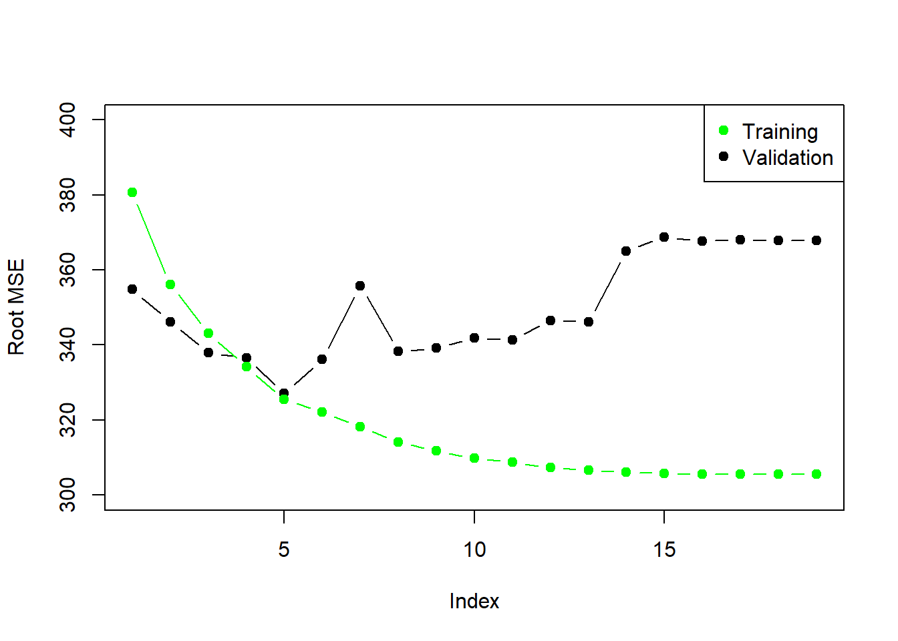
As we expect, the training error goes down monotonically as the model gets bigger, but not so for the validation error.
This was a little tedious - not having a predict method for regsubsets. So we will write a generic function for it.
predict.regsubsets <- function(object, newdata, id, ...){
form <- as.formula(object$call[[2]])
mat <- model.matrix(form, newdata)
coefi <- coef(object, id = id)
mat[ ,names(coefi)] %*% coefi
}We will do 10-fold cross-validation. Its really easy!
set.seed(11)
folds <- sample(rep(1:10, length = nrow(Hitters)))
folds## [1] 3 1 4 4 7 7 3 5 5 2 5 2 8 3 3 3 9 2 9 8 10 5 8
## [24] 5 5 5 5 10 10 4 4 7 6 7 7 7 3 4 8 3 6 8 10 4 3 9
## [47] 9 3 4 9 8 7 10 6 10 3 6 9 4 2 8 2 5 6 10 7 2 8 8
## [70] 1 3 6 2 5 8 1 1 2 8 1 10 1 2 3 6 6 5 8 8 10 4 2
## [93] 6 1 7 4 8 3 7 8 7 1 10 1 6 2 9 10 1 7 7 4 7 4 10
## [116] 3 6 10 6 6 9 8 10 6 7 9 6 7 1 10 2 2 5 9 9 6 1 1
## [139] 2 9 4 10 5 3 7 7 10 10 9 3 3 7 3 1 4 6 6 10 4 9 9
## [162] 1 3 6 8 10 8 5 4 5 6 2 9 10 3 7 7 6 6 2 3 2 4 4
## [185] 4 4 8 2 3 5 9 9 10 2 1 3 9 6 7 3 1 9 4 10 10 8 8
## [208] 8 2 5 9 8 10 5 8 2 4 1 4 4 5 5 2 1 9 5 2 9 9 5
## [231] 3 2 1 9 1 7 2 5 8 1 1 7 6 6 4 5 10 5 7 4 8 6 9
## [254] 1 2 5 7 1 3 1 3 1 2table(folds)## folds
## 1 2 3 4 5 6 7 8 9 10
## 27 27 27 26 26 26 26 26 26 26cv.errors <- matrix(NA, 10, 19)
for (k in 1:10) {
best.fit <- regsubsets(Salary ~ ., data = Hitters[folds != k, ], nvmax = 19,
method = "forward")
for (i in 1:19) {
pred <- predict(best.fit, Hitters[folds == k, ], id = i)
cv.errors[k, i] <- mean((Hitters$Salary[folds == k] - pred)^2)
}
}
rmse.cv <- sqrt(apply(cv.errors, 2, mean))
plot(rmse.cv, col = "blue", pch = 19, type = "b")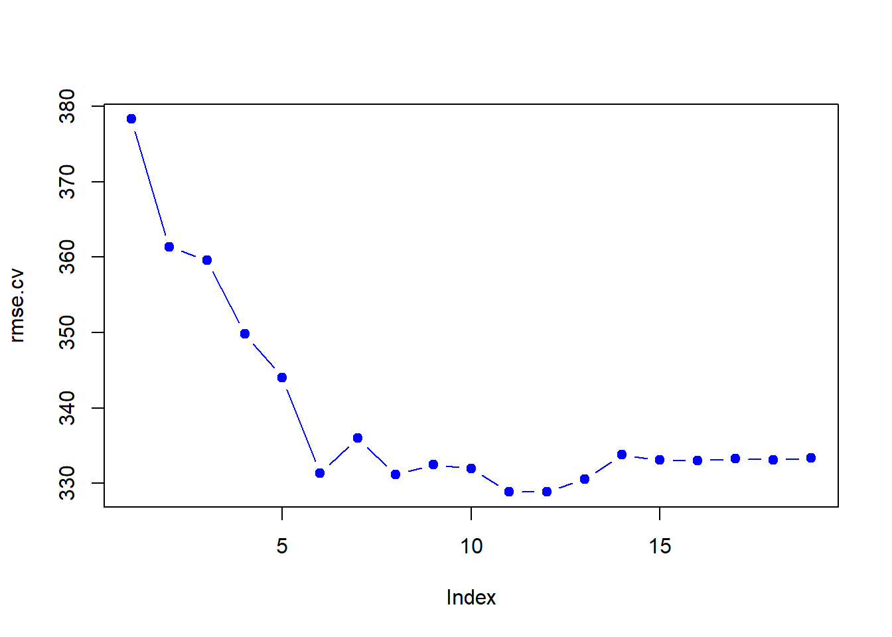
We will use the package glmnet, which does not use the model formula language, so we will set up an x and y.
library(glmnet)## Loading required package: Matrix## Loading required package: foreach## Loaded glmnet 2.0-13?glmnet
x <- model.matrix(Salary ~ .-1, data = Hitters)
y <- Hitters$SalaryFirst we will fit a ridge-regression model. Use glmnet with alpha = 0. Remember from the lectures, ridge regression penalizes by the sum squares of the coefficients. It takes the usual linear regression Residual Sum of Squares (\(RSS\)), and has been modified by adding a penalty placed on the coefficients.
\[RSS + \lambda\sum_{j=1}^p\beta_j^2\]
As \(\lambda\) increases, the coefficients shrink to zero. The following plot illustrates this relationship well. When \(\lambda = 0\), you have the coefficients of linear regression, with their parameters resting on the y-axis where x = 0.
ridge_model <- glmnet(x, y, alpha = 0)
plot(ridge_model, xvar = "lambda", label = TRUE)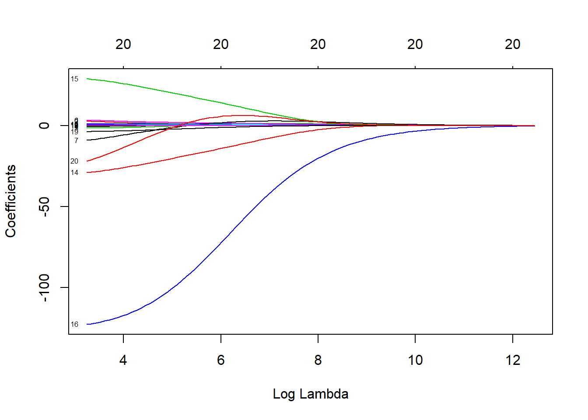 here is also a cv.glmnet function which will do the cross-validation for us and has a plot method.
cv_ridge_model <- cv.glmnet(x, y, alpha = 0)
plot(cv_ridge_model)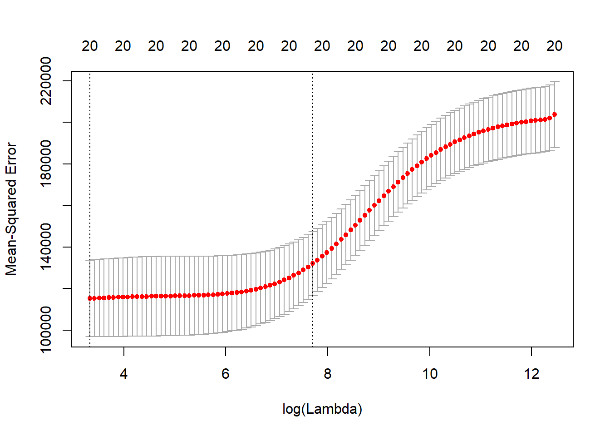
str(cv_ridge_model)## List of 10
## $ lambda : num [1:99] 255282 232604 211940 193112 175956 ...
## $ cvm : num [1:99] 203819 202160 201518 201275 201010 ...
## $ cvsd : num [1:99] 15885 15831 15732 15720 15706 ...
## $ cvup : num [1:99] 219704 217991 217250 216995 216716 ...
## $ cvlo : num [1:99] 187935 186329 185786 185555 185303 ...
## $ nzero : Named int [1:99] 20 20 20 20 20 20 20 20 20 20 ...
## ..- attr(*, "names")= chr [1:99] "s0" "s1" "s2" "s3" ...
## $ name : Named chr "Mean-Squared Error"
## ..- attr(*, "names")= chr "mse"
## $ glmnet.fit:List of 12
## ..$ a0 : Named num [1:100] 536 528 527 526 525 ...
## .. ..- attr(*, "names")= chr [1:100] "s0" "s1" "s2" "s3" ...
## ..$ beta :Formal class 'dgCMatrix' [package "Matrix"] with 6 slots
## .. .. ..@ i : int [1:2000] 0 1 2 3 4 5 6 7 8 9 ...
## .. .. ..@ p : int [1:101] 0 20 40 60 80 100 120 140 160 180 ...
## .. .. ..@ Dim : int [1:2] 20 100
## .. .. ..@ Dimnames:List of 2
## .. .. .. ..$ : chr [1:20] "AtBat" "Hits" "HmRun" "Runs" ...
## .. .. .. ..$ : chr [1:100] "s0" "s1" "s2" "s3" ...
## .. .. ..@ x : num [1:2000] 1.22e-36 4.43e-36 1.78e-35 7.49e-36 7.91e-36 ...
## .. .. ..@ factors : list()
## ..$ df : int [1:100] 20 20 20 20 20 20 20 20 20 20 ...
## ..$ dim : int [1:2] 20 100
## ..$ lambda : num [1:100] 255282 232604 211940 193112 175956 ...
## ..$ dev.ratio: num [1:100] 6.19e-36 1.16e-02 1.27e-02 1.39e-02 1.53e-02 ...
## ..$ nulldev : num 53319113
## ..$ npasses : int 701
## ..$ jerr : int 0
## ..$ offset : logi FALSE
## ..$ call : language glmnet(x = x, y = y, alpha = 0)
## ..$ nobs : int 263
## ..- attr(*, "class")= chr [1:2] "elnet" "glmnet"
## $ lambda.min: num 28
## $ lambda.1se: num 2220
## - attr(*, "class")= chr "cv.glmnet"Now we fit a lasso model, calling glmnet but using the default alpha=1. This time, instead of penalizing the sum of squares of the coefficients, we penalize their absolute values instead. This actually restricts some coefficients to be exactly zero, which makes them effectively NULL. Your variable selection has now been performed for you in a much more efficient manner than the subset and step-wise methods.
\[RSS + \lambda\sum_{j=1}^p\lvert\beta_j\rvert\]
lasso_model <- glmnet(x, y, alpha = 1)
plot(lasso_model, xvar = "lambda", label=TRUE)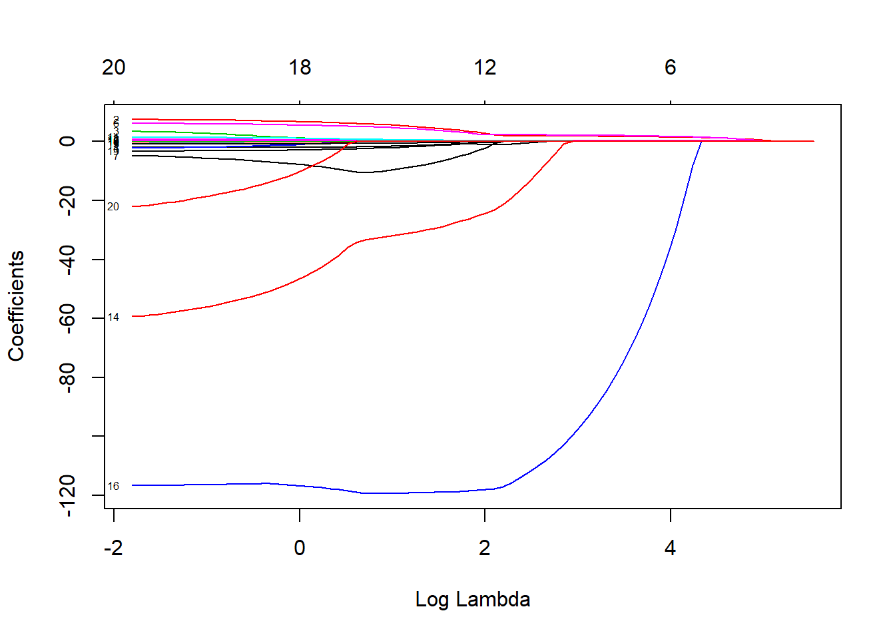
plot(lasso_model, xvar = "dev", label=TRUE)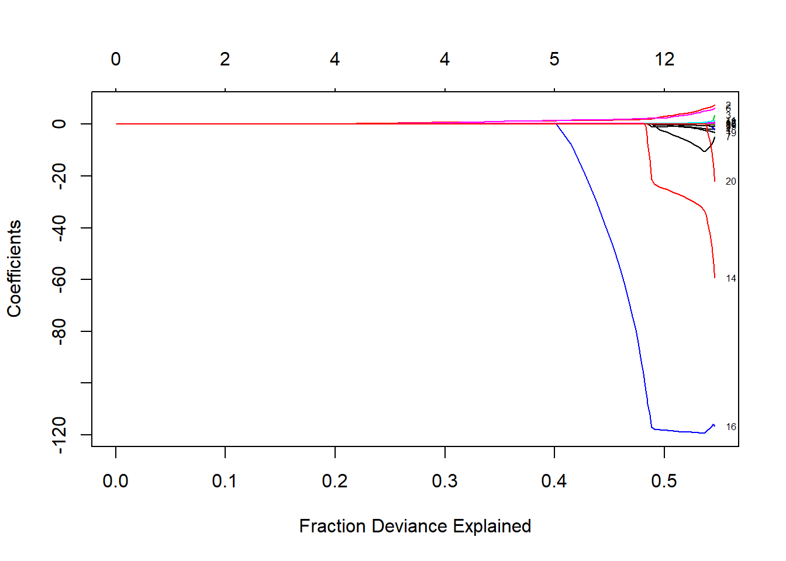
Lets use Cross-Validation for the Lasso.
cv.lasso <- cv.glmnet(x, y, alpha = 1)
plot(cv.lasso)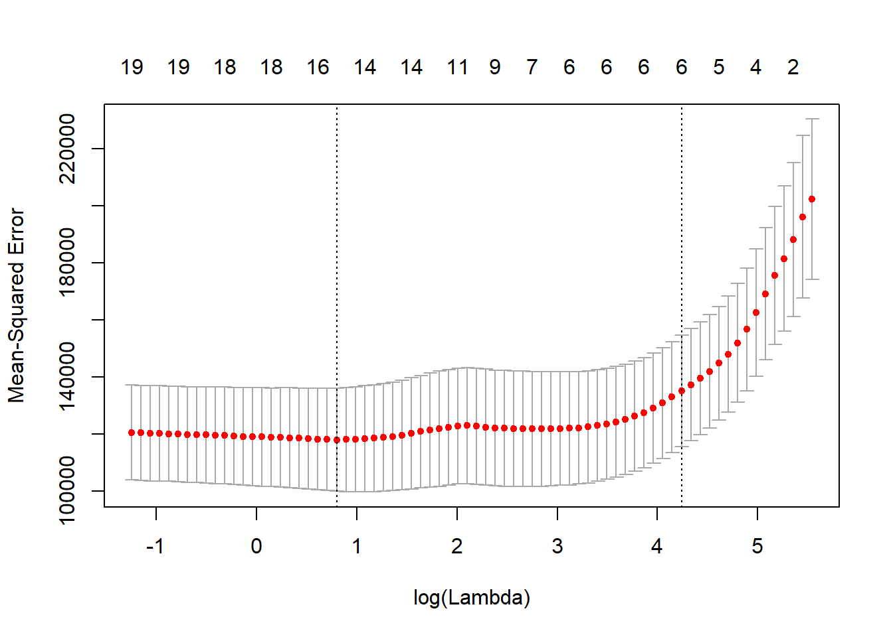
coef(cv.lasso)## 21 x 1 sparse Matrix of class "dgCMatrix"
## 1
## (Intercept) 127.95694754
## AtBat .
## Hits 1.42342566
## HmRun .
## Runs .
## RBI .
## Walks 1.58214111
## Years .
## CAtBat .
## CHits .
## CHmRun .
## CRuns 0.16027975
## CRBI 0.33667715
## CWalks .
## LeagueA .
## LeagueN .
## DivisionW -8.06171262
## PutOuts 0.08393604
## Assists .
## Errors .
## NewLeagueN .Suppose we want to use our earlier train/validation set to select the lambda for the lasso.
lasso_train <- glmnet(x[train,],y[train])
lasso_train##
## Call: glmnet(x = x[train, ], y = y[train])
##
## Df %Dev Lambda
## [1,] 0 0.00000 246.40000
## [2,] 1 0.05013 224.50000
## [3,] 1 0.09175 204.60000
## [4,] 2 0.13840 186.40000
## [5,] 2 0.18000 169.80000
## [6,] 3 0.21570 154.80000
## [7,] 3 0.24710 141.00000
## [8,] 3 0.27320 128.50000
## [9,] 4 0.30010 117.10000
## [10,] 4 0.32360 106.70000
## [11,] 4 0.34310 97.19000
## [12,] 4 0.35920 88.56000
## [13,] 5 0.37360 80.69000
## [14,] 5 0.38900 73.52000
## [15,] 5 0.40190 66.99000
## [16,] 5 0.41260 61.04000
## [17,] 5 0.42140 55.62000
## [18,] 5 0.42880 50.67000
## [19,] 5 0.43490 46.17000
## [20,] 5 0.43990 42.07000
## [21,] 5 0.44410 38.33000
## [22,] 5 0.44760 34.93000
## [23,] 6 0.45140 31.83000
## [24,] 7 0.45480 29.00000
## [25,] 7 0.45770 26.42000
## [26,] 7 0.46010 24.07000
## [27,] 8 0.46220 21.94000
## [28,] 8 0.46380 19.99000
## [29,] 8 0.46520 18.21000
## [30,] 8 0.46630 16.59000
## [31,] 8 0.46730 15.12000
## [32,] 8 0.46810 13.78000
## [33,] 9 0.47110 12.55000
## [34,] 9 0.47380 11.44000
## [35,] 9 0.47620 10.42000
## [36,] 10 0.48050 9.49500
## [37,] 9 0.48450 8.65200
## [38,] 10 0.48770 7.88300
## [39,] 10 0.49360 7.18300
## [40,] 11 0.49890 6.54500
## [41,] 12 0.50450 5.96300
## [42,] 12 0.51010 5.43400
## [43,] 13 0.51470 4.95100
## [44,] 13 0.51850 4.51100
## [45,] 13 0.52170 4.11000
## [46,] 14 0.52440 3.74500
## [47,] 14 0.52670 3.41200
## [48,] 15 0.52870 3.10900
## [49,] 15 0.53030 2.83300
## [50,] 15 0.53160 2.58100
## [51,] 16 0.53280 2.35200
## [52,] 17 0.53420 2.14300
## [53,] 18 0.53580 1.95300
## [54,] 18 0.53760 1.77900
## [55,] 18 0.53890 1.62100
## [56,] 18 0.54000 1.47700
## [57,] 18 0.54090 1.34600
## [58,] 18 0.54160 1.22600
## [59,] 18 0.54220 1.11700
## [60,] 18 0.54280 1.01800
## [61,] 18 0.54320 0.92770
## [62,] 18 0.54360 0.84530
## [63,] 18 0.54380 0.77020
## [64,] 19 0.54410 0.70180
## [65,] 19 0.54430 0.63940
## [66,] 19 0.54450 0.58260
## [67,] 19 0.54470 0.53090
## [68,] 19 0.54490 0.48370
## [69,] 20 0.54510 0.44070
## [70,] 20 0.54520 0.40160
## [71,] 20 0.54530 0.36590
## [72,] 20 0.54540 0.33340
## [73,] 20 0.54550 0.30380
## [74,] 20 0.54560 0.27680
## [75,] 20 0.54570 0.25220
## [76,] 20 0.54570 0.22980
## [77,] 20 0.54580 0.20940
## [78,] 20 0.54580 0.19080
## [79,] 20 0.54590 0.17380
## [80,] 20 0.54590 0.15840
## [81,] 20 0.54590 0.14430
## [82,] 20 0.54590 0.13150
## [83,] 20 0.54600 0.11980
## [84,] 19 0.54600 0.10920
## [85,] 19 0.54600 0.09948
## [86,] 19 0.54600 0.09064
## [87,] 19 0.54600 0.08259
## [88,] 20 0.54600 0.07525
## [89,] 20 0.54600 0.06856pred <- predict(lasso_train, x[-train, ])
dim(pred)## [1] 83 89rmse <- sqrt(apply((y[-train]-pred)^2, 2, mean))
plot(log(lasso_train$lambda), rmse, type = "b", xlab = "Log(lambda)")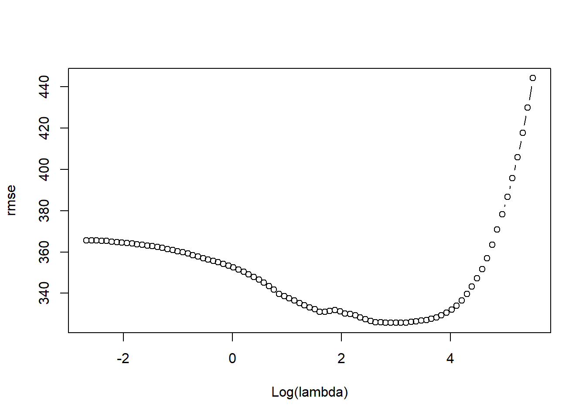
lambda_best <- lasso_train$lambda[order(rmse)[1]]
lambda_best## [1] 19.98706coef(lasso_train, s = lambda_best)## 21 x 1 sparse Matrix of class "dgCMatrix"
## 1
## (Intercept) 107.9416686
## AtBat .
## Hits 0.1591252
## HmRun .
## Runs .
## RBI 1.7340039
## Walks 3.4657091
## Years .
## CAtBat .
## CHits .
## CHmRun .
## CRuns 0.5386855
## CRBI .
## CWalks .
## LeagueA -30.0493021
## LeagueN .
## DivisionW -113.8317016
## PutOuts 0.2915409
## Assists .
## Errors .
## NewLeagueN 2.0367518